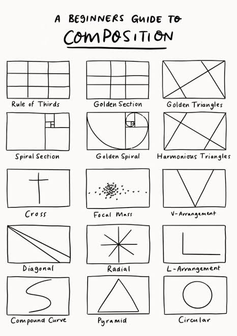
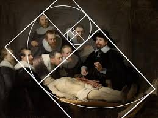

องค์ประกอบที่นำมาใช้ประกอบด้วย เส้น (Line) รูปร่าง (Shape) รูปทรง (Form) สี (Color) น้ำหนัก (Value) พื้นผิว (Texture) และพื้นที่ว่าง (Space) ซึ่งทั้งหมดมีความสัมพันธ์กันในการสร้างผลงานศิลปะ
ช่วยให้ภาพไม่ดูหนักไปทางด้านใดด้านหนึ่ง ทำให้ผลงานดูเป็นระเบียบและน่ามอง
ความกลมกลืนช่วยให้องค์ประกอบต่าง ๆ เข้ากันได้ ส่วนความแตกต่างช่วยสร้างความน่าสนใจให้กับผลงาน
จุดเด่นช่วยดึงดูดสายตาไปยังส่วนสำคัญของภาพ และสัดส่วนช่วยให้ขนาดของสิ่งต่าง ๆ ในภาพมีความสัมพันธ์กันอย่างเหมาะสม